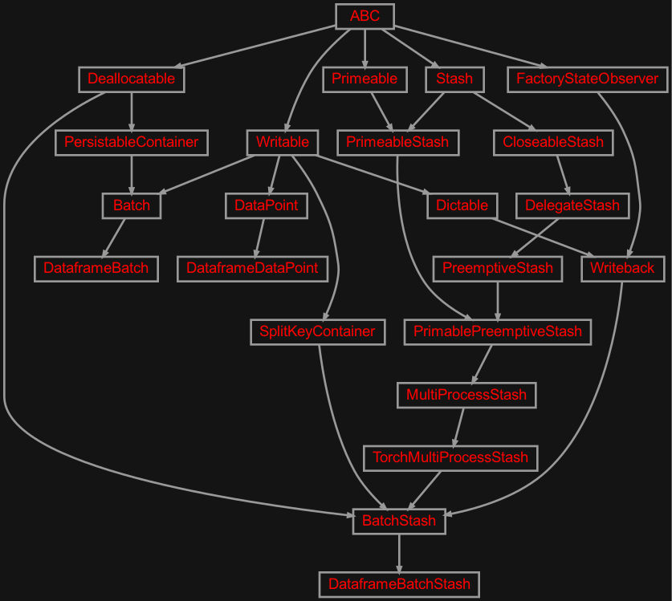
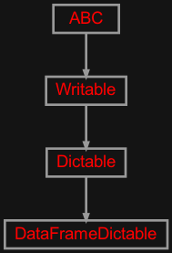
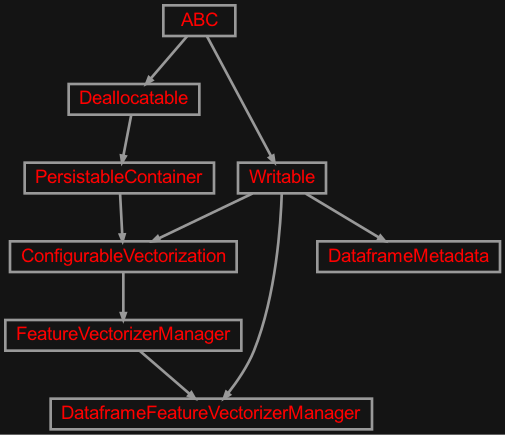

zensols.deeplearn.dataframe package#
Submodules#
zensols.deeplearn.dataframe.batch#

An implementation of batch level API for Pandas dataframe based data.
- class zensols.deeplearn.dataframe.batch.DataframeBatch(batch_stash, id, split_name, data_points)[source]#
Bases:
BatchA batch of data that contains instances of
DataframeDataPoint, each of which has the row data from the dataframe.- __init__(batch_stash, id, split_name, data_points)#
- get_features()[source]#
A utility method to a tensor of all features of all columns in the datapoints.
- Return type:
- Returns:
a tensor of shape (batch size, feature size), where the feaure size is the number of all features vectorized; that is, a data instance for each row in the batch, is a flattened set of features that represent the respective row from the dataframe
- class zensols.deeplearn.dataframe.batch.DataframeBatchStash(name, config_factory, delegate, config, chunk_size, workers, data_point_type, batch_type, split_stash_container, vectorizer_manager_set, batch_size, model_torch_config, data_point_id_sets_path, decoded_attributes=<property object>, batch_feature_mappings=None, batch_limit=9223372036854775807)[source]#
Bases:
BatchStashA stash used for batches of data using
DataframeBatchinstances. This stash uses an instance ofDataframeFeatureVectorizerManagerto vectorize the data in the batches.- __init__(name, config_factory, delegate, config, chunk_size, workers, data_point_type, batch_type, split_stash_container, vectorizer_manager_set, batch_size, model_torch_config, data_point_id_sets_path, decoded_attributes=<property object>, batch_feature_mappings=None, batch_limit=9223372036854775807)#
- property feature_vectorizer_manager: DataframeFeatureVectorizerManager#
- class zensols.deeplearn.dataframe.batch.DataframeDataPoint(id, batch_stash, row)[source]#
Bases:
DataPointA data point used in a batch, which contains a single row of data in the Pandas dataframe. When created, column is saved as an attribute in the instance.
- __init__(id, batch_stash, row)#
-
row:
InitVar#
zensols.deeplearn.dataframe.util#

Utility functionality for dataframe related containers.
zensols.deeplearn.dataframe.vectorize#

Contains classes used to vectorize dataframe data.
- class zensols.deeplearn.dataframe.vectorize.DataframeFeatureVectorizerManager(name, config_factory, torch_config, configured_vectorizers, prefix, label_col, stash, include_columns=None, exclude_columns=None)[source]#
Bases:
FeatureVectorizerManager,WritableA pure instance based feature vectorizer manager for a Pandas dataframe. All vectorizers used in this vectorizer manager are dynamically allocated and attached.
This class not only acts as the feature manager itself to be used in a
FeatureVectorizerManager, but also provides a batch mapping to be used in aBatchStash.- __init__(name, config_factory, torch_config, configured_vectorizers, prefix, label_col, stash, include_columns=None, exclude_columns=None)#
- property batch_feature_mapping: BatchFeatureMapping#
Return the mapping for
zensols.deeplearn.batch.Batchinstances.
- column_to_feature_id(col)[source]#
Generate a feature id from the column name. This just attaches the prefix to the column name.
- Return type:
- property dataset_metadata: DataframeMetadata#
Create a metadata from the data in the dataframe.
-
exclude_columns:
Tuple[str] = None# The columns to be excluded, or if
None(the default), no columns are excluded as features.
-
include_columns:
Tuple[str] = None# The columns to be included, or if
None(the default), all columns are used as features.
-
prefix:
str# The prefix to use for all vectorizers in the dataframe (i.e.
adl_for the Adult dataset test case example).
-
stash:
DataframeStash# The stash that contains the dataframe.
- write(depth=0, writer=<_io.TextIOWrapper name='<stdout>' mode='w' encoding='utf-8'>)[source]#
Write the contents of this instance to
writerusing indentiondepth.- Parameters:
depth (
int) – the starting indentation depthwriter (
TextIOBase) – the writer to dump the content of this writable
- class zensols.deeplearn.dataframe.vectorize.DataframeMetadata(prefix, label_col, label_values, continuous, descrete)[source]#
Bases:
WritableMetadata for a Pandas dataframe.
- __init__(prefix, label_col, label_values, continuous, descrete)#
-
descrete:
Dict[str,Tuple[str]]# A mapping of label to nominals the column takes for descrete mappings.
-
prefix:
str# The prefix to use for all vectorizers in the dataframe (i.e.
adl_for the Adult dataset test case example).
- write(depth=0, writer=<_io.TextIOWrapper name='<stdout>' mode='w' encoding='utf-8'>)[source]#
Write the contents of this instance to
writerusing indentiondepth.- Parameters:
depth (
int) – the starting indentation depthwriter (
TextIOBase) – the writer to dump the content of this writable
Module contents#
Contains API framework code for vectorizing and batching dataframe data without the necessity of a domain specific model implementation.